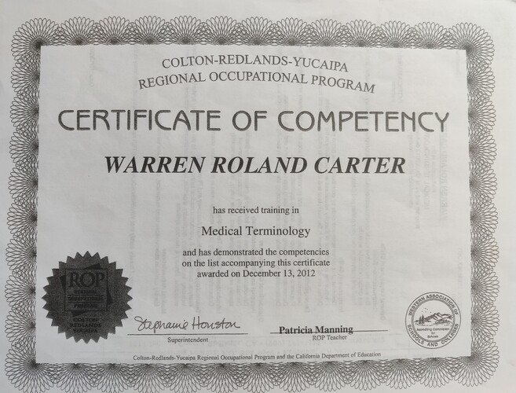
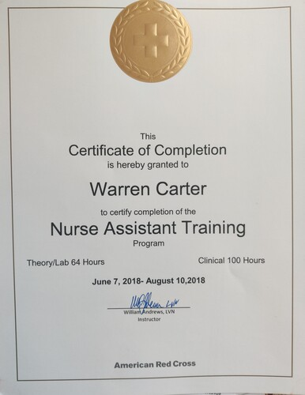

Warren Carter
Hello, I am a current senior at the University of California, Riverside. I am mojoring in Biology and am in my last quarter to attain my bachelors. I am using this degree to help me in applying to healthcare job programs and possible research.
I have completed several classes in my Biology degree such as Entomology, Genetics, Microbiology, Biochemistry and a few others. I have a interest in these subjects and would have an interest in learning more about Microbiology in particualr. I hope to be able to do some research in the studies of vaccines, diseases, antivirals, and antibacterials
I have experience in medical services, retail, and contrusction.I have volunteered, shadowed and been in programs that have allowed me to experience healthcare workers and what the healthcare field is about. This work with healthcare professionals has both showed me what the healthcare ssytem is like, and also has given me a drive to want to work apart of a health care team to help others. I have worked in retail stores like the UCR and UofR bookstores for close to 2 years. This work within retail has given me a good idea of how to wor kwell within a team and also how to be puntual about the assignments im doing. I have also worked with my father on his buisness of building, decontruction and recycling woodedn spools for electric comapnies for around 8 years. This was very useful to give me a strong base for how to work hard and taught be about workplace saftey since this job could have serious injuries if the worker is not being safe.
There are many skills i can bring to a workplace as a part of a team. I am hard working- I will be efficiant yet accurate at all things i am doing in the workplace. I am puntual worker- I will get assaignments done in a good pace that will best work for the team i am working with. I work well within a team- Wether i need to be a leader or just a memeber, I can efficeintly and comfortably work within a team to get a task done. But i am also good an independent work- i dont need to be in a teamto thrive and work effeicently, i am able to get task done by myself if the assignment requires it. I am driven- I have a sense of pride in working well, which drive me to do better work. I am empathetic- I have the ability to help people through tough situation and be able to listen to their hard ships which i feel is a good trait to have for a healthcare worker. I am a fast leaner- I can be trained quicjely and will put in my best effort to learn those skills to the best of my ability to be able t otranslate them well to my job.
Experience
Bookselller
• Sell books and other merchandise
• Recieve and send packages with oppropriate packing skills
• Stocking books andmerchandise in organized manor
Volunteer
• Aide in the cleaning and exercise of patients
• Helped take notes for Physical Therapists
Tutor
• Tutored individuals in Math and Science
• Tutored a class and posted quizzes for students to take
• Created Practice worksheets
• Helped students with online programs
Education
UC Riverside
Crafton Hill College
Portfolio

